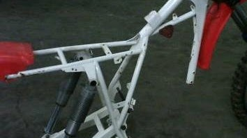

I am sorry to say, but up until 2010 I had never heard of C&J. My internet tribulations and exchanges with some other XR500 nuts on a French Forum (www.leguidevert.com) about Barigo bikes opened a whole new world to me.
At the time I was in the final stages of emigrating from Europe to California for work. One night in a motel in Sunnyvale, in the Silicon Valley, I was sufficiently jet-lagged to be wasting my time on eBay at 1am. There was this C&J frame for sale.
I was not sure what it was worth but thought it would be a nice way to get my hobby started when landing in CA for good a few weeks later. I placed a very reasonable bid and got it for.... 21 cents more than the next bidder... sorry mate :)
You will notice that it is missing the foot peg brackets... Over the following months I acquired parts via eBay to start rebuilding it. In the process I got in touch with Jeff Cole, formerly of C&J, in fact the C in C&J.